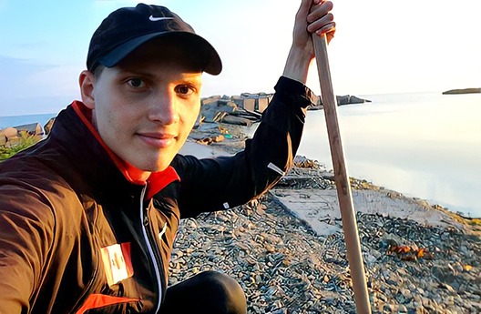
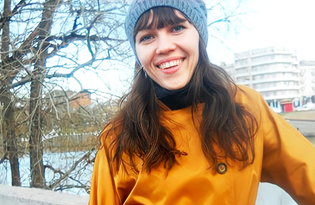
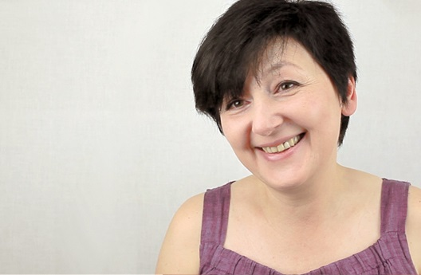

-
 Ушла депрессия, это безумное состояние, когда ты не знаешь — зачем жить
Ушла депрессия, это безумное состояние, когда ты не знаешь — зачем жить
Зачем жить? Зачем все, что происходит с тобой? Зачем вставать с утра с постели? Зачем учиться? Зачем делать хоть что-то в этой жизни? Если ты не знаешь ответа на эти вопросы, жить невыносимо. Я начала посматривать на балкон седьмого этажа, как на возможный выход. Изменения начались уже во время тренинга...
Валентина Алабугинастудентка факультета журналистики МГУ Смотреть видео -
 Депрессия. Почему меня ничто не радует?
Депрессия. Почему меня ничто не радует?
Какой идиот придумал, что материнство — это радость? На тренинг меня привели мои дети, вернее, те состояния, в которых я оказалась после их рождения. Абсолютная невыносимость бытия. Мне было даже все равно, что мои дети останутся одни, что я кому-то причиню боль. Я сама была сгустком постоянной непрекращающейся душевной боли. Я отчаянно искала способ зацепиться за жизнь, найти в ней хоть какой-то смысл...
Ольга Сарафановаспециалист по связям с общественностью Смотреть видео -
 Если бы я не попала на тренинг, моя жизнь бы просто закончилась
Если бы я не попала на тренинг, моя жизнь бы просто закончилась
Было ощущение, что моя жизнь кончилась в 45 лет. Просто все надоело. Я просыпалась, открывала глаза и не могла понять, зачем они открываются. Мне было хорошо там, в темноте, в тишине. Мне хотелось вечного покоя, тянуло туда. Но я не сделала этот последний шаг. Меня удержали лекции по системно-векторной психологии...
Ирина Каминскаяпреподаватель Смотреть видео -
.jpg) Как выйти из депрессии?
Как выйти из депрессии?
Я всегда была веселой и общительной, и вообще "разгуляй душа". После рождения ребенка я стала социопатом, мне было особенно тяжело на людях и с людьми, мне была нужна тишина. Я не понимала, чего хочу. Вроде все есть, муж молодец, старается, и ребенок рядом, но радости ни от чего не получала. Добавились еще панические атаки и страхи. Никто мне не мог помочь, никто не понимал моих мучений, всем было со мной тяжело...
Ольга Холопова Смотреть видео -
 СВП для меня лично это как рождение
СВП для меня лично это как рождение
Нельзя сравнивать даже с тем, что было год назад: как будто завелась пружина, которая каждый день тебя подбрасывает на небывалую высоту. Хочу то, хочу это, легко решаю возникающие проблемы. Чувствую в себе силы, знаю, куда их прикладывать и как.
Александр Молотов Читать -
 Погиб муж — горе, из которого я никак не могла выйти
Погиб муж — горе, из которого я никак не могла выйти
Когда к десятилетиям внутренней пустоты и усталости от тщетных попыток ее заполнить добавились 7 лет горя, я готова была вообще отказаться от жизни. Во время беременности у меня погиб муж. С тех пор я ходила, как по замкнутому кругу, словно в капсуле, отделившей меня от внешнего мира. При взаимодействии с людьми чувство жгучего одиночества не покидало меня. И вот буквально 2 месяца назад я словно вынырнула! На тренинге...
Христина Богдановаадминистратор, преподаватель математики Смотреть видео -
 Депрессия. Брак не радует, работа не наполняет. В чем смысл?
Депрессия. Брак не радует, работа не наполняет. В чем смысл?
Останавливало, что есть близкие и родные, и поэтому я должна еще попытаться здесь. Так или иначе всегда возвращалась к вопросу, зачем это все, зачем я. Какое-то время я предполагала, что, наверное, семья, любовь и вот это все хорошее - этого будет достаточно. Оказалось, что недостаточно. Развод, нелюбимая работа и хронические депрессивные состояния. И тут я вдруг встретила человека, который меня очень удивил...
Ирина Туктароваинженер-радиотехник Смотреть видео -
 "Что делать, когда все плохо?" — кто ответит на этот вопрос?
"Что делать, когда все плохо?" — кто ответит на этот вопрос?
Что делать, когда все плохо? Когда тебе не помогают врачи, психологи... Я постоянно чувствовал боль и нежелание что-то делать дальше. Суицидальные мысли были моим постоянным спутником. Я пришел в жизненный тупик и не знал, как выбраться. Я лишился работы, семьи, я почувствовал, что мой путь закончен...
Алексей Четвериковинженер по автоматизации Смотреть видео -
 Депрессия. Почему я не хочу жить?
Депрессия. Почему я не хочу жить?
В 10 лет сказала маме, что не очень хочу жить. Она хмыкнула и ушла. С тех пор я перестала задавать вопросы, замкнулась и никому не доверяла. Мне выписывали антидепрессанты с транквилизаторами. Это купировало панические атаки, но ты как овощ, понимаешь, что шагнуть с балкона не страшно... Если бы я не прошла тренинг Юрия Бурлана, то скорее всего меня бы уже не было в живых...
Валерия Синявскаяспециалист финансового отдела Смотреть видео -

Тренинг Юрия Бурлана спас мне жизнь
я решал вопрос о жизни и смерти, мне уже казалось, что ничего мне не сможет помочь, но я все-таки ухватился за выданный мне шанс и не ошибся.
Александр Кутернинстудент IT-факультета Читать -
 Как навсегда избавиться от депрессии?
Как навсегда избавиться от депрессии?
Когда мне было 15-16 лет, я уже совсем разочаровалась в этом мире, я его ненавидела и мечтала о том, чтобы он исчез... Я много читала, хорошо успевала по математике, но мне не хотелось жить в этом мире уже лет с пяти, тогда я смотрела в небо и всем сердцем посылала желание "Заберите меня отсюда!" Конечно, сейчас уже, после тренинга, я понимаю, что это было и почему...
Виктория Лаврищеваменеджер по продажам Смотреть видео -
 Депрессия. Почему меня ничто не радует?
Депрессия. Почему меня ничто не радует?
«Как тяжело! Если бы всё это сейчас закончилось, я вздохнула бы с облегчением», – не раз ловила я себя на этой мысли. Никаких видимых причин для этого у меня не было: прекрасный муж, прекрасная семья, дочка, успешный бизнес, я была в целом реализованным человеком. Внешне всё было хорошо, а внутри – противно.
Инна Сушкобизнес-консультант Смотреть видео -
 Депрессия у врача-психиатра. Что делать, когда психиатрия бессильна?
Депрессия у врача-психиатра. Что делать, когда психиатрия бессильна?
Как врач-психиатр я знала, что у меня ДЕПРЕССИЯ. Рекуррентно-депрессивное расстройство и готовый план суицида...
Екатерина Крестниковаврач – психиатр-нарколог Смотреть видео -
 Мама 6 детей в депрессии. Есть ли выход?
Мама 6 детей в депрессии. Есть ли выход?
Суицидные мысли посещали меня с детского возраста, но морально-нравственные установки и обязательства перед другими служили хорошим ограничителем. Последней каплей стала возникшая сильная ненависть к детям, постоянно требовавшим моего внимания, и желание их уничтожить, вместе с собой. Это был момент, когда я реально испугалась...
Надежда Чеприна Смотреть видео -
 Когда я хотела уйти из жизни, в нее вошла Системно-векторная психология
Когда я хотела уйти из жизни, в нее вошла Системно-векторная психология
Все живут, и им нормально. А мне нет. Внешне у меня всё хорошо: есть работа, учеба в университете, я – востребованный специалист, у меня есть молодой человек, родители, деньги – всё прекрасно! А в груди необъятная черная дыра, и ничего с ней нельзя сделать.
Екатерина Федоровапровизор Смотреть видео -
 Депрессия у психолога. В чём смысл жизни?
Депрессия у психолога. В чём смысл жизни?
Я уже сидела с веревкой в руках, когда открылась дверь и ребенок вбежал за игрушкой… СУИЦИДНЫЕ МЫСЛИ меня не покидали. Я не хотела ничего...
Екатерина Филипповапсихолог Смотреть видео -
 Послеродовая депрессия. Что делать?
Послеродовая депрессия. Что делать?
ПОСЛЕРОДОВАЯ ДЕПРЕССИЯ началось у меня уже в роддоме. Родив ребенка, я не чувствовала никакой радости. Были пустота и раздражение.
Анна Хохловаврач-офтальмолог Смотреть видео -
 Я не понимаю, как я жила раньше: такая тяжесть, такая тьма... Не жизнь!
Я не понимаю, как я жила раньше: такая тяжесть, такая тьма... Не жизнь!
...апатия временами лет с 10, после депрессия лет с 15 и с каждым разом всё чаще и длительнее, потом и вовсе депрессия с суицидальными мыслями. И уже даже с сознательным отказом от жизни. Зачем она мне? Галлюцинации, депривация полная, ПА, голоса матери с оскорблениями в голове (всё это теперь отсутствует благодаря тренингу)
Валерия Синявскаяспециалист по финансовому планированию Читать -
 Депрессия. Почему меня ничто не радует?
Депрессия. Почему меня ничто не радует?
Последняя мысль, которая меня удерживала, — это что убивать себя стыдно, а для близких людей это будет пятно на всю их оставшуюся жизнь. Я решила, что как-нибудь уже дотяну. На тот момент мне было 35 лет. Постоянное состояние неприкаянности, тоскливости, неустроенности, отсутствие радости. Было желание уйти в монастырь, от любящего мужа, от семьи...
Тамила Булуковаменеджер по делопроизводству Смотреть видео -
 Почему у меня депрессия и как из нее выйти?
Почему у меня депрессия и как из нее выйти?
Первые депрессивные состояния я начала испытывать в 10 лет. Давила невозможность осознать бесконечность вселенной, бесполезность человеческой жизни. Все действия делались на автомате, хотя 10-12 лет - такой активный возраст. А я предпочитала одинокие прогулки по лесу. Целостной картины мира не было, было ощущение, что жизнь — это какая-то игра, а не реальность...
Екатерина Барабановакоординатор благотворительных проектов Смотреть видео -
 Я впервые почувствовала себя живой!
Я впервые почувствовала себя живой!
В подростковый период у меня были МЫСЛИ О СУИЦИДЕ. Я дошла до крыши и встала перед выбором: либо шагнуть – и всё закончится, либо что-то менять. Особых драм или трагедий в моей жизни не происходило, просто сама жизнь проходила мимо меня...
Дина Сайфуллинажурналист Смотреть видео -
 Депрессия... Чёрная, тяжёлая. И ненависть, ненависть... И сон. Сутками...
Депрессия... Чёрная, тяжёлая. И ненависть, ненависть... И сон. Сутками...
Я вдруг увидела, что я иду по улице, а там лето!!!!! Тепло и сирень. Я остановилась и нюхала сирень))))))))))))))))))))))) Как это возможно
Оксана Шевченко Читать -
 Тяжелейшая послеродовая депрессия, мысли о суициде — бесследно ушли
Тяжелейшая послеродовая депрессия, мысли о суициде — бесследно ушли
Я никогда не могла подумать, что лично переживу это тяжелейшее состояние души после рождения дочери. Меня сейчас поймет только тот, кто его испытывает каждый день, и каждую секунду борется за жизнь. Борется с самим собой, а если точнее – с внутренним состоянием, которое забирает все силы, чтобы жить...
Юлия Шилкова Читать -
 У меня было пять попыток покончить с собой. Теперь я планирую жизнь
У меня было пять попыток покончить с собой. Теперь я планирую жизнь
У меня не было будущего. Никогда за 40 лет. Сколько себя помню, всегда хотела умереть. Смотрела с наслаждением фильмы с убийствами и завидовала умирающим. Плакала, почему они, а не я, если в новостях передавали о чьей-то смерти...
Читать аноним -
 Я отвел себе последние 50 дней жизни
Я отвел себе последние 50 дней жизни
Только представьте, сам себе добровольно вынес приговор, причем вполне осознанно. Я не знаю, как бы я это сделал. Наверное бы прыгнул с крыши. Ведь это так легко.
Павел Рводитель Читать -

Ушла апатия к жизни. Появились силы и знания, как всего достичь
Мне было не интересно жить. Я ни к чему не стремилась. Я даже не могла разобраться в том, что мне на самом деле хочется от жизни. Я не могла понять, что мне интересно в жизни, потому что интерес к жизни пропал.
Алина Шпотинаинженер-технолог Читать -
Хотелось пристрелить улыбающихся людей, настолько они раздражали
Пришла тогда, когда стало совсем невыносимо. Боль от того, что жива. Если пытаться это описать, то это была просто адская боль от самого факта жизни. Я яростно ненавидела то, что мне приходится жить. Ненавидела себя, своё тело, свои мысли, всех вокруг, солнечный свет и день в принципе...
Читать Анна Радминистратор -
 Я додержалась до тренинга, когда уже не помогали ни антидепрессанты, ни алкоголь, светил уже 5 этаж
Я додержалась до тренинга, когда уже не помогали ни антидепрессанты, ни алкоголь, светил уже 5 этаж
Послеродовая депрессия, панические атаки, многолетние походы к психотерапевту, потом психиатр, антидепрессанты как витамины, алкоголь, потеря всех друзей, знакомых, балкон 5 этажа, конец. До тренинга по системно-векторной психологии была не жизнь, каждый день я готова была умереть, это было ожидание смерти. Тренинг по системно-векторной психологии Юрия Бурлана полностью изменил мою жизнь…
Елена Дьяковапродавец-консультант, администратор Смотреть видео -
Я будто вышла из затяжной комы
В процессе обучения мое сознание начало проясняться. Эмоциональное состояние стало меняться. Я вышла из этого состояния вакуума, из состояния никак, из нежелания ничего. Нет больше мыслей – я устала, мне все надоело, ничего не хочу. Я не даю себе зависать в своих мыслях. Ввожу принцип: «Сделал дело – думай смело!». Появилась какая-то трезвость мышления. Ушло напряжение, чувство бессилия и пустоты. Больше нет этой беспричинной злости и раздражения. Я ужасно боялась жизни, будущего и, кажется, этот страх отступает.
Читать Светлана Бурая -

Я была в жуткой депрессии, а после тренинга у меня появилась вся жизнь!
Последние три года до тренинга я лежала целыми днями лицом к стене и размышляла о нелепости внешней жизни, в идеале мне хотелось взорваться в самолете. Ответы на мои внутренние вопросы, получаемые из множества учений, завели меня в тупик, я просто перестала жить, существовала как будто затянутая в тугие ремни. Знания, полученные уже в начале тренинга, перерезали мои ремни, я наконец вздохнула.
Тамара Ткаченкоэкономист Смотреть видео
Уже 25888результатов
оставили более
20500 человек
оставили более
20500 человек
Результаты прошедших тренинг
1696 результатов
1696
результатов
Показать еще
19
декабря